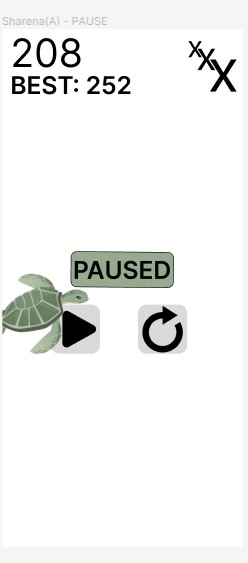
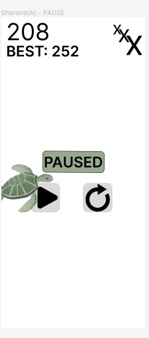

My name is Sharena Sharif and I am the group leader. We are working on the Ocean Ninja Project. Our project takes a unique twist on Fruit Ninja. I have worked on two screens, including the paused page and losing page. I created the UI Design and focused on the UX for both the paused and losing page.
 
